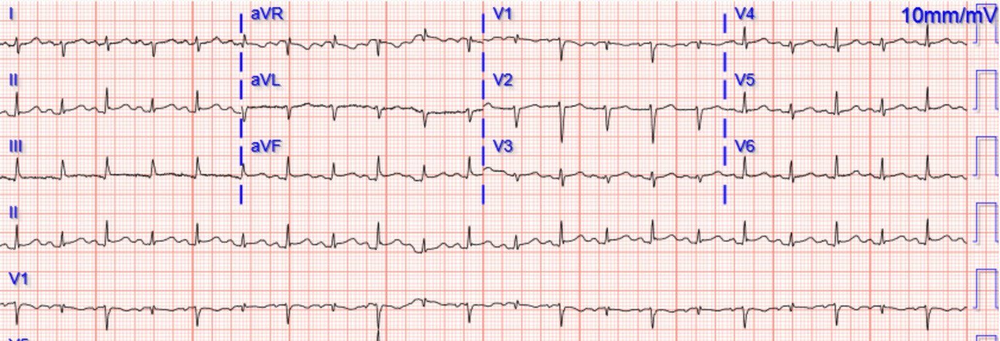
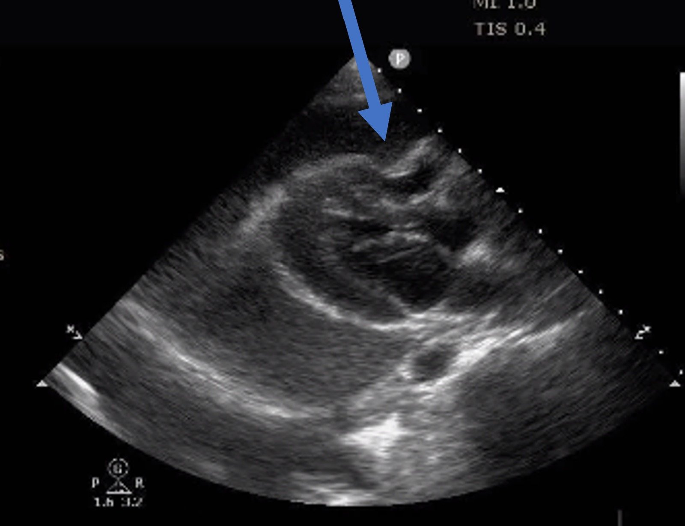
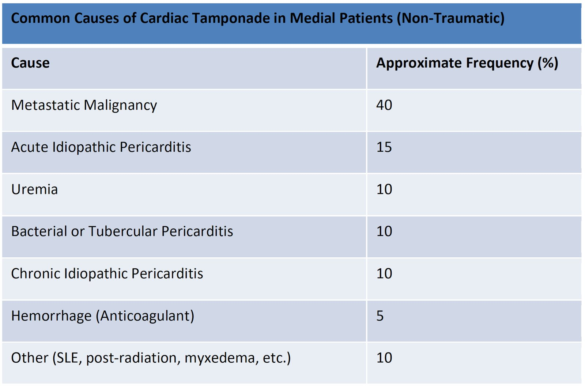
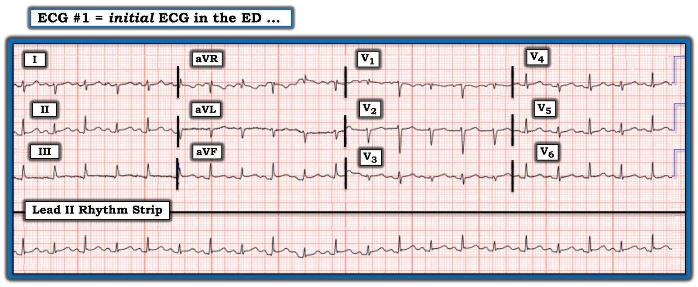
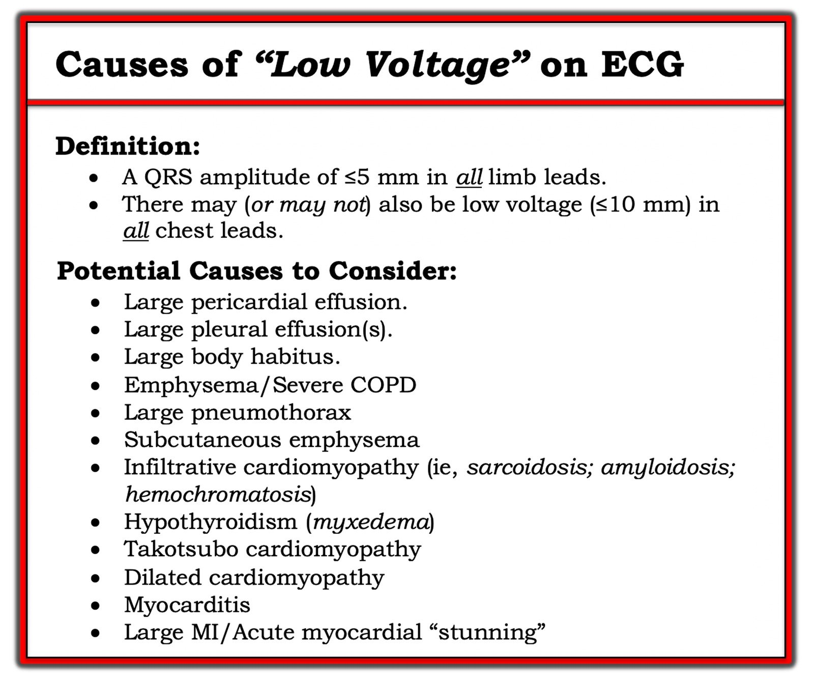
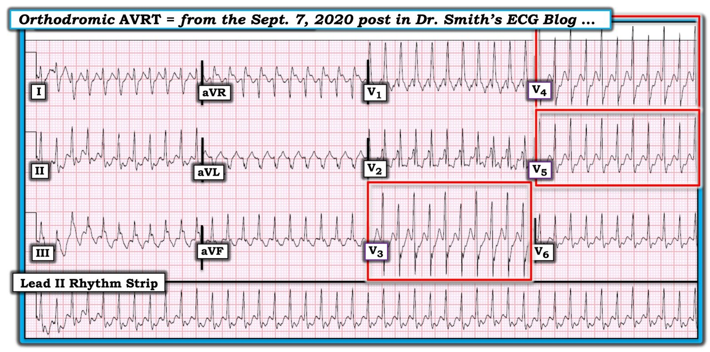

28/11/2022 — Một phụ nữ độ tuổi 20 bị ngất
Bản dịch tiếng Việt của bài "A woman in her 20s with syncope" – Dr. Smith’s ECG Blog. Giữ nguyên toàn bộ 6 hình ảnh và 1 video của bản gốc.
Tác giả: Destiny Folk MD, biên tập bởi Meyers, bình duyệt bởi Smith và Grauer.
Một phụ nữ cuối độ tuổi 20 có tiền sử ung thư cổ tử cung đã điều trị hóa trị và xạ trị đến khoa cấp cứu vì khó thở, nặng ngực và hai lần ngất.
Dấu hiệu sinh tồn ban đầu: nhiệt độ 97.7F, mạch 125, nhịp thở 20, huyết áp 115/90 và độ bão hòa oxy 95% khi thở khí trời. Khi đến viện, bệnh nhân không có vẻ suy kiệt cấp. Khám thực thể ghi nhận nhịp tim nhanh và tiếng tim mờ xa xăm. Bệnh nhân thở không gắng sức, nghe phổi trong cả hai bên.
Vì bệnh nhân khai đau ngực, khó thở và ngất, một điện tâm đồ được ghi ngay:


Bạn nghĩ gì?
Điện tâm đồ cho thấy nhịp nhanh xoang, QRS hẹp, điện thế thấp với biên độ luân phiên, không có sóng T nhọn, không có QT kéo dài, và ST chênh lên rất ít ở II, III và aVF (không có ST chênh xuống soi gương đáng kể hay sóng T đảo ngược ở aVL). Sự thay đổi biên độ và hình dạng QRS từ nhát này sang nhát khác chính là điện thế luân phiên (electrical alternans).
Siêu âm tim tại giường đã được thực hiện, mặt cắt trục dọc cạnh ức được trình bày dưới đây:
Có tràn dịch màng ngoài tim lượng lớn kèm xẹp thất phải trong thì tâm thu. Khó xác định có xẹp trong thì tâm trương hay không do bệnh nhân có nhịp tim nhanh. Tuy nhiên, nếu bạn dừng hình đoạn clip siêu âm rồi tua tới tua lui để tìm thời điểm trong clip mà van hai lá của bệnh nhân mở, bạn biết tim đang được đổ đầy, và do đó đang ở thì tâm trương.


Ảnh tĩnh với mũi tên xanh chỉ vị trí xẹp thất phải trong thì tâm trương.
Ảnh này cho thấy tim ở thì tâm trương và tại vị trí mũi tên bạn có thể thấy thành thất phải bị lõm vào. Có người nói hình ảnh này trông như ai đó đang nhảy trên tấm bạt lò xo. Xẹp thất phải thì tâm trương là một trong những đặc điểm xác định của chèn ép tim. Để chẩn đoán chèn ép tim, cần có tràn dịch màng ngoài tim (kích thước dịch không nhất thiết quan trọng) + xẹp nhĩ phải thì tâm trương HOẶC xẹp thất phải thì tâm trương. Xẹp nhĩ phải thì tâm trương là dấu hiệu sớm nhất, nhưng bệnh nhân cần có xẹp nhĩ phải trong ít nhất 1/3 chu chuyển tim, điều này có thể khó nhận ra trên siêu âm. Vì vậy, chúng tôi thường chẩn đoán chèn ép tim dựa vào xẹp thất phải thì tâm trương.
Tràn dịch màng ngoài tim ở bệnh nhân này nhiều khả năng là bán cấp, xét theo lượng dịch và độ hồi âm của dịch (máu mới chảy thì trống âm, còn dịch này trông gần đồng âm hơn).
Do nhịp tim nhanh và các lần ngất, bệnh nhân được đánh giá là đang ở tình trạng sốc tắc nghẽn còn bù với nguy cơ rất cao sắp mất bù. Bác sĩ tim mạch xuống khám bệnh nhân khẩn cấp và đưa bệnh nhân ngay vào phòng thông tim (cath lab) để chọc dịch màng ngoài tim (nếu bác sĩ tim mạch và phòng thông tim không sẵn sàng ngay, nhóm cấp cứu sẽ phải tự chọc dịch màng ngoài tim). Chọc dịch màng ngoài tim được thực hiện theo đường dưới mũi ức dưới hướng dẫn của màn huỳnh quang tăng sáng. 780 cc dịch máu được rút ra khỏi khoang màng ngoài tim. Để tham chiếu, tim bình thường có khoảng 25-50 cc dịch trong khoang màng ngoài tim. Mẫu dịch được gửi nuôi cấy và làm tế bào học, kết quả cho thấy có tế bào ác tính. Siêu âm tại giường (POCUS) lặp lại cho thấy tràn dịch màng ngoài tim đã hết. Bệnh nhân xuất viện sau một thời gian nằm viện ngắn, được hẹn theo dõi tại chuyên khoa ung bướu và tim mạch.
Là bác sĩ cấp cứu, chúng tôi gặp nhiều nguyên nhân khác nhau gây tràn dịch màng ngoài tim. Bảng dưới đây trình bày các nguyên nhân thường gặp gây chèn ép tim ở bệnh nhân nội khoa. Khoảng 40% các ca chèn ép tim ở bệnh nhân nội khoa là do ung thư di căn. Nguyên nhân thường gặp thứ hai của chèn ép tim nội khoa là viêm màng ngoài tim cấp vô căn. Các nguyên nhân ít gặp hơn gồm urê máu cao, viêm màng ngoài tim do vi khuẩn hoặc do lao, viêm màng ngoài tim mạn vô căn, xuất huyết, và các nguyên nhân khác như bệnh tự miễn, xạ trị, phù niêm, v.v.


Biểu hiện kinh điển của chèn ép tim là tam chứng Beck, gồm tụt huyết áp, tĩnh mạch cổ nổi (JVD) và tiếng tim mờ. Chèn ép tim cũng đi kèm mạch nghịch thường (pulsus paradoxus), tức là huyết áp tâm thu giảm nhiều bất thường, hơn 10 mmHg, khi hít vào. Tam chứng Beck chỉ có đủ cả 3 yếu tố cùng lúc ở khoảng 1/3 số bệnh nhân. Theo hồ sơ, bệnh nhân này được ghi nhận có tiếng tim mờ xa xăm nhưng không tụt huyết áp và không có tĩnh mạch cổ nổi.
Bình luận của Smith: Trước hết, truyền dịch tĩnh mạch được chỉ định để cải thiện tiền tải. Ngay cả trong chèn ép tim, ta vẫn có thể cải thiện cung lượng thất phải và sự đổ đầy thất trái bằng một liều bolus dịch tĩnh mạch — nó làm tăng áp lực đổ đầy và do đó tăng thể tích đổ đầy. Ở bệnh viện chúng tôi, tôi nghĩ mọi bác sĩ đều muốn đặt ống thông pigtail ngay tại khoa cấp cứu, dưới hướng dẫn siêu âm, chứ không chờ bác sĩ tim mạch đưa bệnh nhân lên phòng thông tim. Bệnh nhân này chỉ ổn định giả tạo. Cô ấy đã bị ngất. Mạch của cô ấy là 125. Hãy đọc bài sau để thấy những bệnh nhân này có thể mất ổn định đến mức nào: A young woman in her early 20s with syncope (Một phụ nữ trẻ đầu độ tuổi 20 bị ngất)
Đồng nghiệp của tôi, Denise Fraga MD, tóm tắt các đặc điểm siêu âm của chèn ép tim:
Các đặc điểm chèn ép tim trên siêu âm
- Tĩnh mạch chủ dưới (IVC) giãn căng (lớn hơn 2cm với mức biến thiên theo hô hấp dưới 50%) (lưu ý: IVC có thể không giãn ở bệnh nhân giảm thể tích tuần hoàn)
- Thay đổi theo hô hấp của vận tốc dòng chảy qua van hai lá (MV) lớn hơn 30% và qua van ba lá (TV) lớn hơn 60% (quan sát trên mặt cắt AP4 bằng Doppler xung (PWD)) (lưu ý: không đặc hiệu cho chèn ép tim khi có COPD, rung nhĩ, suy thất phải cấp)
- Tràn dịch màng ngoài tim
- Xẹp/đảo ngược buồng nhĩ phải (cuối tâm trương/đầu tâm thu. quan sát trên mặt cắt AP4 hoặc SX) = độ nhạy cao, độ đặc hiệu thấp
- Xẹp/đảo ngược nhĩ phải hơn 1/3 chu chuyển tim (làm tăng độ đặc hiệu)
- Đảo ngược thành tự do thất phải đầu tâm trương (có thể dùng M-mode ở mặt cắt PSLA hoặc PSSA để thấy) = đặc hiệu nhất. Độ đặc hiệu cao, độ nhạy thấp hơn (lưu ý: áp lực thất phải tăng do tăng áp phổi (pHTN), hở van ba lá (TR) nặng có thể ngăn đảo ngược thất phải)
Tài liệu tham khảo:
- Klein AL, Abbara S, Agler DA, Appleton CP, Asher CR, Hoit B, Hung J, Garcia MJ, Kronzon I, Oh JK, Rodriguez ER, Schaff HV, Schoenhagen P, Tan CD, White RD. American Society of Echocardiography clinical recommendations for multimodality cardiovascular imaging of patients with pericardial disease: endorsed by the Society for Cardiovascular Magnetic Resonance and Society of Cardiovascular
Computed Tomography. J Am Soc Echocardiogr. Tháng Chín 2013;26(9):965-1012.e15. doi:10.1016/j.echo.2013.06.023. PMID: 23998693. - Appleton C, Gillam L, Koulogiannis K. Cardiac Tamponade. Cardiol Clin. Tháng Mười Một 2017;35(4):525-537. doi: 10.1016/j.ccl.2017.07.006. PMID: 29025544.
Những điểm cần học
- Trên siêu âm tim, chèn ép tim có đặc điểm là tràn dịch màng ngoài tim + xẹp thất phải thì tâm trương.
- Sự thay đổi của phức bộ QRS từ nhát này sang nhát khác (điện thế luân phiên) là dấu hiệu điện tâm đồ kinh điển của tràn dịch màng ngoài tim lượng lớn hoặc chèn ép tim.
- Tam chứng Beck chỉ gặp ở khoảng 1/3 bệnh nhân chèn ép tim, gồm tụt huyết áp, tĩnh mạch cổ nổi (JVD) và tiếng tim mờ.
= = =
======================================
BÌNH LUẬN CỦA TÔI, bởi KEN GRAUER, MD (22/11/2022 — Cập nhật cho WordPress ngày 7/1/2026):
Ca hôm nay đáng chú ý vì có 2 dấu hiệu điện tâm đồ quan trọng: i) Điện thế thấp; và ii) Điện thế luân phiên. Như Bs. Meyers và Folk đã trình bày — người phụ nữ trẻ bất hạnh mắc ung thư cổ tử cung này đến khoa cấp cứu (ED) vì ngất, nặng ngực và khó thở cấp. Tôi đã trình bày lại điện tâm đồ ban đầu của cô ấy ở Hình 1.
= = =
Hình 1: Điện tâm đồ ban đầu của ca hôm nay.


= = =
SUY NGHĨ CỦA TÔI về điện tâm đồ ở Hình 1:
Nhịp ở điện tâm đồ #1 — là nhịp nhanh xoang với tần số ~125/phút. Phức bộ QRS hẹp ở cả 12 chuyển đạo. Việc đánh giá thêm các dấu hiệu điện tâm đồ gặp khó khăn — vì đường nền bị trôi, và cứ cách một nhát lại có hình dạng QRS thay đổi.
- Đây không phải nhịp đôi theo nghĩa thông thường — vì cả khoảng PR và khoảng R-R đều không đổi suốt bản ghi. Không có nhát đến sớm nào. Thay vào đó (như Bs. Meyers và Folk đã nêu) — đây là điện thế luân phiên!
- Lưu ý rằng trục mặt phẳng trán thay đổi theo từng nhát (tức là từ đẳng điện ở chuyển đạo I — sang âm rõ rệt ở chuyển đạo này).
- Ở chuyển đạo V1 — cứ cách một nhát lại có một QRS rất nhỏ với hình ảnh RBBB không hoàn toàn.
- Biên độ QRS nói chung giảm rõ rệt — đặc biệt ở các nhát xen kẽ. Do đó, có điện thế thấp lan tỏa.
- Có vẻ có ST chênh lên ở chuyển đạo II và aVF, và ở mức độ ít hơn ở các chuyển đạo ngực bên.
- NHẬN ĐỊNH: Hình ảnh tổng thể của điện tâm đồ này không gợi ý thuyên tắc phổi (PE) cấp hay một biến cố tim cấp. Thay vào đó — MẤU CHỐT để xác định nguyên nhân của các dấu hiệu điện tâm đồ ở Hình 1 nằm ở bệnh sử và siêu âm tim chẩn đoán (xác nhận có tràn dịch màng ngoài tim lượng lớn).
= = =
Điện thế thấp trên điện tâm đồ:
Chúng tôi đã điểm lại nhiều nguyên nhân gây điện thế thấp trên điện tâm đồ trong các bài trước của Dr. Smith’s ECG Blog. Chẩn đoán phân biệt của “điện thế thấp” mà nhiều người hành nghề thường đưa ra có xu hướng bắt-đầu-và-kết-thúc với tràn dịch màng ngoài tim. Nhưng nhìn vào Hình 2 sẽ nhắc chúng ta rằng còn một danh sách dài các bệnh lý khác cần cân nhắc!
- Dù đã nói như trên — bệnh sử của ca hôm nay, cùng với hình ảnh điện thế luân phiên rất ấn tượng (với đường nền dịch chuyển theo từng nhát trong suốt dải nhịp chuyển đạo dài ở Hình 1) — ngay lập tức hướng tới tràn dịch màng ngoài tim lượng lớn là nguyên nhân có khả năng nhất.
= = =
Hình 2: Các nguyên nhân gây điện thế thấp trên điện tâm đồ (Hình được lấy lại từ phần Bình luận của tôi ở cuối trang trong bài ngày 12 tháng Mười Một năm 2020 trên Dr. Smith’s ECG Blog).


= = =
Điện thế luân phiên là gì?
Hiện tượng hấp dẫn điện thế luân phiên — là một thực thể lâm sàng tương đối ít gặp và thường bị hiểu sai. Nó thường bị bỏ sót khi xảy ra. Nhìn vào Hình 3 sẽ thấy vì sao: Dấu hiệu điện tâm đồ này quả thật có thể rất tinh tế.
- Điện thế luân phiên là một thuật ngữ chung bao gồm nhiều cơ chế sinh lý bệnh khác nhau. Sự xuất hiện của nó không chỉ giới hạn ở chèn ép tim — mà còn liên quan đến ngày càng nhiều bệnh cảnh lâm sàng.
- Cần phân biệt giữa luân phiên điện và luân phiên cơ học. Bản thân thuật ngữ “luân phiên” (alternans) — chỉ đơn thuần cho biết có dao động theo pha ở một tín hiệu nào đó của tim từ nhát này sang nhát kế tiếp trong chu chuyển tim. Đó có thể là cường độ của mạch (hoặc huyết áp ghi được) — hoặc có thể là một hay nhiều dạng sóng trên bản ghi điện tâm đồ.
LƯU Ý: Có thể sẽ hữu ích nếu trước tiên định nghĩa các hiện tượng luân phiên khác đôi khi có thể bị nhầm với các biểu hiện điện tâm đồ khác nhau (nhất là vì các dạng hiện tượng luân phiên khác này cũng có thể gặp trong chèn ép tim).
- Mạch luân phiên (pulsus alternans) — là một dạng luân phiên cơ học. Nhịp đều — nhưng cung lượng tim thay đổi theo từng nhát. Hiện tượng này gặp trong rối loạn chức năng tâm thu nặng. Cần phân biệt mạch luân phiên với mạch nhịp đôi — trong đó một nhát yếu hơn theo sau nhát mạnh hơn bằng một khoảng thời gian ngắn hơn (như khi nhát luân phiên là một PVC, vốn dĩ dễ hiểu là tạo ra cung lượng tim ít hơn).
- Cũng cần phân biệt mạch luân phiên với mạch nghịch thường (pulsus paradoxus) — trong đó có sự giảm biên độ mạch sờ thấy được (hoặc huyết áp đo được giảm >10 mm) khi hít vào nhẹ nhàng. Mặc dù mạch luân phiên và mạch nghịch thường đều có thể gặp trong chèn ép tim — chúng là những hiện tượng khác với các dạng điện thế luân phiên, vốn là luân phiên điện.
= = =
Về Hình 3:
Điện thế luân phiên dễ nhận ra khi sự khác biệt luân phiên giữa các phức bộ QRST là rõ ràng — như khi tìm nó bên trong 3 hình chữ nhật ĐỎ ở Hình 3.
- Dù vậy — BẠN có đồng thời nhận thấy sự thay đổi biên độ sóng R từ nhát này sang nhát khác tinh tế hơn nhiều ở dải nhịp chuyển đạo II dài trong Hình 3 không?
- Dù không có tính quyết định (Xem bên dưới) — việc phát hiện điện thế luân phiên trong một nhịp SVT gợi ý mạnh mẽ vào lại là cơ chế.
= = =
Hình 3: Tôi đã khoanh trong hình chữ nhật ĐỎ 3 chuyển đạo trên bản ghi này có bằng chứng rõ ràng của điện thế luân phiên. (Hình được lấy lại từ phần Bình luận của tôi ở cuối trang trong bài ngày 7 tháng Chín năm 2020 trên Dr. Smith’s ECG Blog).


= = =
Điện thế luân phiên: Định nghĩa/Đặc điểm/Cơ chế
Điện thế luân phiên — là sự thay đổi từ nhát này sang nhát khác ở một hay nhiều phần của bản ghi điện tâm đồ. Nó có thể xảy ra cách một nhát — hoặc theo một tỷ lệ lặp lại khác (3:1; 4:1; v.v.). Biên độ hoặc hướng của sóng P, phức bộ QRS, đoạn ST và/hoặc sóng T đều có thể bị ảnh hưởng (mặc dù luân phiên sóng P hiếm gặp). Cũng có thể thấy thời khoảng luân phiên (của các khoảng PR, QRS hoặc QT).
- Điện thế luân phiên — được Herring quan sát lần đầu trong phòng thí nghiệm năm 1909. Một năm sau, Sir Thomas Lewis báo cáo hiện tượng này trên lâm sàng; ông mô tả hiện tượng xảy ra “hoặc khi cơ tim bình thường nhưng tần số tim rất nhanh hoặc khi có bệnh tim nặng và tần số bình thường”. Mô tả năm 1910 này của Lewis đến nay vẫn rất hữu ích để nhắc chúng ta về 2 bệnh cảnh lâm sàng chính mà điện thế luân phiên thường gặp nhất: i) Nhịp nhanh vào lại trên thất; — và ii) Chèn ép tim.
- Quay lại với Hình 1: Sự thay đổi chủ yếu mà chúng ta thấy trên bản ghi này liên quan đến một kiểu lặp lại của thay đổi luân phiên theo từng nhát về hình dạng QRS. Thời khoảng các khoảng không thay đổi. Có thể có thay đổi nhẹ về hình dạng sóng P và ST-T ở một số chuyển đạo — nhưng tôi cho rằng mức này là tối thiểu so với sự thay đổi rõ ràng hơn nhiều về hình dạng QRS.
= = =
Cơ chế:
Có 3 loại hiện tượng điện thế luân phiên cơ bản — mỗi loại liên quan đến một cơ chế sinh lý bệnh khác nhau: i) Luân phiên tái cực; ii) Luân phiên dẫn truyền và tính trơ; — và iii) Luân phiên do chuyển động bất thường của tim. Một cơ chế tế bào chung, liên quan đến sự giải phóng hoặc tái hấp thu calci bất thường trong lưới cơ tương, có thể là nền tảng của từng quá trình này.
- Luân phiên tái cực — là sự thay đổi từng nhát của đoạn ST và/hoặc sóng T. Sự luân phiên về hình dạng đoạn ST (hoặc về mức độ ST chênh lên hay chênh xuống) — thường liên quan đến thiếu máu cục bộ. Ngược lại — luân phiên sóng T thường gắn với thay đổi tần số tim hoặc thời khoảng QT (nhất là khi QT kéo dài). Ở bệnh nhân có QT dài — sóng T luân phiên có thể báo trước xoắn đỉnh (Torsades de Pointes) sắp xảy ra. Cả luân phiên đoạn ST lẫn luân phiên sóng T đều được biết là có thể xuất hiện trước các rối loạn nhịp thất ác tính. Do đó, dạng điện thế luân phiên này có thể mang ý nghĩa tiên lượng xấu quan trọng khi gặp trong một số tình huống nhất định. Dù vậy — nhiều tình trạng lâm sàng khác nhau đã được ghi nhận có liên quan với luân phiên tái cực, nên không phải lúc nào cũng kéo theo ý nghĩa tiên lượng xấu. Trong số các tình trạng lâm sàng này có hội chứng QT dài bẩm sinh — rối loạn điện giải nặng (hạ calci máu; hạ kali máu; hạ magnesi máu) — bệnh cơ tim do rượu hoặc bệnh cơ tim phì đại — thuyên tắc phổi cấp — xuất huyết dưới nhện — ngừng tim và giai đoạn sau hồi sức — cùng nhiều dạng thiếu máu cục bộ (tự phát hoặc do nghiệm pháp gắng sức trên thảm lăn hay kích thích khác gây ra).
- Luân phiên dẫn truyền và tính trơ — là sự thay đổi trong việc lan truyền xung động dọc theo một phần nào đó của hệ dẫn truyền. Điều này có thể do dao động của tần số tim hoặc của hoạt động hệ thần kinh, hoặc do điều trị bằng thuốc. Biểu hiện trên điện tâm đồ của dạng luân phiên này có thể gồm hình dạng luân phiên của sóng P, phức bộ QRS, hoặc khác biệt luân phiên về thời khoảng P-R hoặc R-R. Đặc biệt — QRS luân phiên trong các nhịp SVT QRS hẹp có liên quan với nhịp nhanh vào lại. Mặc dù việc nhận ra QRS luân phiên trong một SVT đều thường gợi ý dẫn truyền ngược dòng qua một AP (đường phụ — Accessory Pathway) — hiện tượng này cũng đã được thấy ở bệnh nhân PSVT/AVNRT đơn thuần, với vòng vào lại chỉ giới hạn trong nút AV. Do đó — nhận ra QRS luân phiên trong một SVT đều không chứng minh có đường phụ. Luân phiên dẫn truyền và tính trơ có thể gặp trong nhịp nhanh vào lại liên quan đến WPW cũng như phụ thuộc nút AV — rung nhĩ — thuyên tắc phổi cấp — đụng dập cơ tim — và rối loạn chức năng thất trái nặng. LƯU Ý: Đôi khi — điện thế luân phiên có thể gặp với VT đơn dạng (Maury và Metzger).
- Luân phiên do chuyển động của tim — là kết quả của sự di động của tim chứ không phải của sự luân phiên về điện. Thực thể lâm sàng quan trọng nhất liên quan với luân phiên do chuyển động là tràn dịch màng ngoài tim lượng lớn — dù luân phiên do chuyển động cũng đã được ghi nhận trong một số ca bệnh cơ tim phì đại. Điều quan trọng cần hiểu là không phải mọi trường hợp tràn dịch màng ngoài tim đều gây điện thế luân phiên. Sự xuất hiện của điện thế luân phiên toàn bộ (của sóng P, phức bộ QRS và sóng T) — nhiều khả năng là điềm báo chèn ép tim sắp xảy ra. Đáng tiếc — độ nhạy của điện thế luân phiên toàn bộ trong dự đoán chèn ép tim là kém (tức là, phần lớn bệnh nhân bị chèn ép tim không biểu hiện điện thế luân phiên trước đó). Do đó — thấy điện thế luân phiên toàn bộ ở bệnh nhân tràn dịch màng ngoài tim lượng lớn có thể hữu ích — nhưng không thấy dấu hiệu điện tâm đồ này thì hoàn toàn không loại trừ khả năng đang có chèn ép tim. Các nghiên cứu siêu âm tim ở bệnh nhân chèn ép tim đã được xác định cho thấy điện thế luân phiên xảy ra đồng bộ với, và là hệ quả trực tiếp của, chuyển động đong đưa như quả lắc của tim trong túi màng ngoài tim giãn rộng, chứa đầy dịch ở bệnh nhân tràn dịch màng ngoài tim lượng lớn.
= = =
Điện thế luân phiên: Những điểm lâm sàng MẤU CHỐT
Tóm lại, điện thế luân phiên không phổ biến — nhưng nó có xảy ra. Bạn sẽ gặp nó — như minh chứng là bệnh nhân không may trong ca hôm nay.
- Trên thực tế — Có vẻ điện thế luân phiên thường gặp nhất khi đi kèm với các nhịp SVT đều (như thấy trong Hình 3). Gặp nó trong bối cảnh này gợi ý (nhưng không chứng minh) sự tồn tại của một AP (đường phụ — Accessory Pathway). Bất kể cơ chế của SVT đều là AVNRT hay AVRT — nhiều khả năng có sự tham gia của vào lại. Kết luận này có thể hữu ích khi cân nhắc các can thiệp thăm dò và điều trị tiềm năng.
- Ở bệnh nhân viêm màng ngoài tim — HOẶC — có bóng tim to trên X-quang ngực — HOẶC — chỉ đơn giản là khó thở không rõ nguyên nhân (như trong ca hôm nay) — nhận ra điện thế luân phiên nên gợi ý khả năng có tràn dịch màng ngoài tim đáng kể, có thể kèm theo chèn ép tim.
- Dù đã nói như trên — Điện thế luân phiên là một dấu hiệu điện tâm đồ không đặc hiệu, cũng có thể chỉ điểm thiếu máu cục bộ cơ tim, rối loạn chức năng thất trái và/hoặc khả năng có bất kỳ yếu tố thúc đẩy nào khác trong số nhiều yếu tố. ĐIỀU CỐT LÕI: Nếu bạn thấy điện thế luân phiên — Hãy tìm một tình trạng lâm sàng nền có thể là nguyên nhân gây ra dấu hiệu điện tâm đồ này.
- Bản thân sự xuất hiện của điện thế luân phiên — không mang ý nghĩa tiên lượng xấu nào ngoài những ý nghĩa gắn với mức độ nặng của bệnh lý nền. Hai ngoại lệ đối với quy tắc chung này là: i) Ở bệnh nhân có QT kéo dài hoặc thiếu máu cục bộ nặng — nhận ra điện thế luân phiên có thể báo trước sự diễn tiến xấu thành xoắn đỉnh (Torsades) hoặc VT/VFib; — và, ii) Ở bệnh nhân tràn dịch màng ngoài tim lượng lớn — sự xuất hiện của điện thế luân phiên toàn bộ (của sóng P, phức bộ QRS và sóng T) gợi ý lúc này có thể đã có chèn ép tim.
- SUY NGHĨ CUỐI CÙNG: Hãy nhớ rằng không phải mọi trường hợp tràn dịch màng ngoài tim đều biểu hiện điện thế thấp và điện thế luân phiên. Cơ chế sinh lý bệnh của điện thế luân phiên khi có tràn dịch màng ngoài tim lượng lớn — là một “tim đong đưa” (swinging heart) trong túi màng ngoài tim. Vì vậy, điện thế luân phiên ít có khả năng xuất hiện khi tràn dịch lượng nhỏ hơn — và ngay cả khi tràn dịch lượng lớn, không phải mọi trường hợp đều biểu hiện điện thế luân phiên.
= = =
= = =